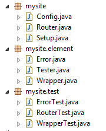

AgileSites
the Easy framework for Agile development with Oracle WebCenter Sites
Scaffold
(Draft)
This document is a reference guide of the code generated with scaffolding.
Scaffold site
The generated code is in the agilesites-app project, in the source folder src/main/java in the package with the name you chose (in this case mysite).

The generated project has 3 packages:
mysitemysite.elementmysite.test
Let's discuss the default content of the three packages
mysite classes
In the package mysite there are 3 (mandatory) files:
ConfigSetupRouter
The Config is the holder of configuration files. It provides the site name and some important methods detailes in the API. You are not expected to change it, unless you need to customise the Configuration.
The Setup code will be executed to setup your site templates when you you execute the wcs-deploy command. You are not expected to change it unless you need to add custom initialization.
The Setupreads the resource file src/main/resources/elements.txt and install all the elements listed there.
The Router is responsible for translating URL in assets or other invocations (for example Ajax calls), and for generating the mapping of an asset into an URL. Please check the architecture to fully understand the role of the router.
The default Router.route maps Page names in URL and viceversa. The default code read the url portion managed by the router and looks for a page whose name matches the name.
The default Router.link does the opposite: provided an asset Page, it will return its name as url fragment for locating it.
The router can be extended to manage arbitrary and complex URL mappings.
mysite.element classes
The standard wizard will generate 3 classes:
WrapperTesterError
Those 3 classes are all CSElements. In the code of the class there is the configuration of the CSElement and the actual CSElement was created whey you performed the wcs-deploy step.
If you inspect with the Admin in the Dev tab what has been created you will see the following SiteEntry

Please check the Architecture document to understand how they fit in the big picture.
The Wrapper is invoked by the Router after the routing is performend. The Wrapper is supposed to be unchached so it must contains no or very limited data access (definitely not flex asset field extraction).
Error is invoked through the wrapper when no asset has been.
And finally the Tester is invoked with /cs/Satellite?pagename=site-tester (change site with the lower-case version of your site name) to run tests.
mysite.tests classes
Default test classes.
Scaffold layout
Generate a new layout template, with a test.
Scaffold template
Generate a new internal template, with a test
Scaffold cselement
Generate a new cselement, with a test
AgileSites - Written by Michele Sciabarrà - © 2013 Sciabarra srl
Open Source Software releases under the Apache License 2.0
Credits: Hosted on GitHub Pages using the Dinky theme for Jekyll Bootstrap